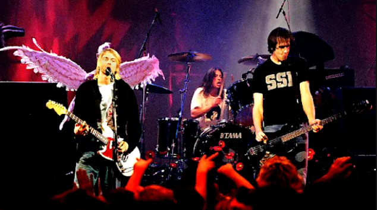
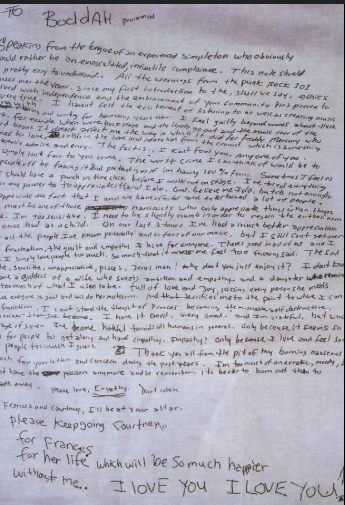

Sobre
Resumo da vida de Kurt Cobain
Kurt Cobain (1967-1994) foi um cantor, compositor e músico norte-americano.
Foi o fundador,
vocalista e guitarrista da banda Nirvana. Viciado em drogas,
morreu com apenas 27 anos de idade.
Kurt Donald Cobain nasceu em Aberdee, ao sul do estado de Washington, Estados Unidos,
no dia 20 de fevereiro de 1967. Era filho de um mecânico e de uma garçonete.
Kurt cresceu em uma família de tradição musical, e seus tios tocavam em bandas da região.
Com dois anos começou a cantar já mostrando seus dons musicais.
Quando estava com sete anos, seus pais se separaram e Cobain tornou-se uma criança reclusa e
rebelde. Passava a maior parte do tempo sozinho ouvindo música e pintando.
Sem lugar certo para morar, vivia com o pai, com a mãe, com amigos e parentes. Duas semanas
antes de se formar no ensino secundário, abandonou a escola.
Apaixonado pelo rock, ao completar 14 anos ganhou de presente sua primeira guitarra
elétrica e logo estava tocando e fazendo suas próprias canções.
Kurt Cobain formou sua primeira banda, a “Fecal Malter”, com o baixista Dale Crover, mas em 1985
conheceu Krist Noviselic e juntos se mudaram para Olympia, atraídos pelo cenário musical da cidade.
Nirvana
Resumo da história da banda fundada por Kurt Cobain
A banda de Kurt Cobain tocava em shows e bares da cidade. Em 1986 teve diversas formações e em
cada uma delas mudava de nome. No final desse mesmo ano, a banda estava formada por Cobain,
vocalista e guitarrista, Krist no baixo, e Chad Channing na bateria, e finalmente adotaram o
nome de “Nirvana”.
Em dezembro de 1988, a banda lançou seu primeiro single com “Love Buzz”.
Em 1989, já com um
público fiel, lançou seu primeiro álbum “Bleach”. Cobain se destacava por seu carisma e por
suas
letras com as quais o público jovem se identificava.
Nesse mesmo ano, o grupo embarcou em sua primeira turnê nacional. Ainda em 1989, Kurt Cobain
conheceu Courtney Love, a vocalista da banda de rock “Hole”. A união dos dois foi explosiva e
traduziu o que é a vida de sexo, drogas e rock roll.
Em 1990, com novo baterista, Peters, o Nirvana gravou seu segundo single, “Silver”.
Além da música título tinha também a música “Dive”.
Com o produtor Butch Vig, gravou também o EP “Blew”, com seis músicas, entre elas,
a primeira versão de “Smells Like Teen Spirit”, que mais tarde se tornaria a
canção de maior
sucesso do conjunto. Em outubro, Dave Grohl tornou-se o baterista definitivo da banda.
O segundo disco do trio, intitulado “Nevermind”, lançado em 1991, vendeu 30 milhões de
cópias
em todo o mundo, e anunciou a chegada de um novo gênero – o grunge – que transformou Seattle
na capital do rock.

Produzido por Butch Vig, que poliu, mas não domesticou a sonoridade áspera do trio,
o disco fez do Nirvana um sucesso que seu líder Kurt Cobain não soube administrar.
Em 1992, Kurt e Courtney, já grávida, casaram-se no Havaí. Kurt foi de pijama à cerimônia. Sua filha
Frances Bean Cobain nasceu logo depois. Nessa época o casal se refugiou em um apartamento em Los Angeles.
Com um ritmo alucinante de shows, o grupo se apresentava com roupas rasgadas e velhas,
além de protagonizar as costumeiras seções de quebra-quebra de instrumentos.
Em janeiro de 1993, o Nirvana veio ao Brasil e durante um show no extinto festival
Hollywood Rock, Kurt Cobain abaixou as calças e cuspiu na câmera.
Mesmo com vários problemas, no dia 23 de setembro desse mesmo ano, foi lançado o disco
“In Utero”, do qual se destacou a música “Heart-Shaped Box”
No dia 8 de janeiro de 1994, a banda fez sua última apresentação nos Estados Unidos no
Center Arena de Seattle. Depois de uma breve parada, no dia 2 de fevereiro o trio partiu
para a última turnê pela Europa.
Carta e Morte
Detalhes sobre a morte do músico

No dia 1 de março de 1994, durante a turnê, Cobain se afundou no vício em
heroína e na última
apresentação em Munique, Alemanha, Cobain foi diagnosticado com bronquite e logo levado para
Roma para tratamento.
No dia 3 de março, ao acordar, sua esposa percebeu que Cobain tinha sofrido uma
overdose.
Levado imediatamente para o hospital, passou o resto do dia inconsciente. Após cinco dias no
hospital, Cobain foi liberado.
Na volta à sua mansão em Seattle, Kurt Cobain escreveu uma carta de
despedida e se suicidou com um tiro na cabeça. Seu corpo só foi encontrado três dias depois.
Kurt Cobain faleceu em Seattle, Washington, Estados Unidos,
no dia 5 de abril de 1994.